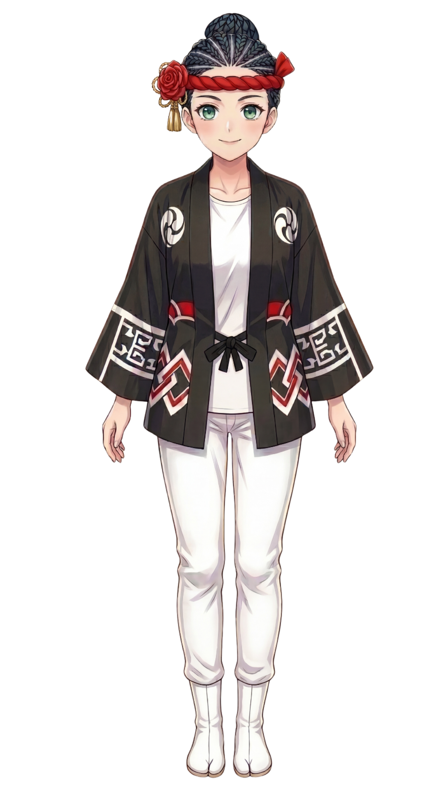

窓口に行けない。電話ができない。FAQは読み切れない。オンライン申請も書けない。行政DXが進むほど、制度の外側に置かれたままの人がいます。本提案は、●●市のAIアバター「地車 祭華」を観光発信ではなく、住民の相談支援フロントとして位置づける構想です。
●●市には、すでに多くの相談制度や支援窓口が整備されています。
足りないのは、制度ではありません。
制度と住民の間に、まだ「最初の入口」が足りていない。
相談にたどり着くまでに、住民は無自覚なまま、いくつものコストを支払っています。
ひとつひとつは小さくても、重なると「もういいや」になる。
支援につながれない人は、どこか1つの段階で止まっています。
何を相談すればいいか、自分でもわからない
窓口に行く時間も気力もない
電話で声を出すのがしんどい
フォームに文章を書く気力が出ない
どの窓口に行けばいいのかわからない
行政に怒られそうで怖い
1タップで動画を流し、声で家電を操作し、LINEでも音声メッセージが増える。
日常の入口は、すでに「話す」「タップする」へ移っています。
その中で、相談だけが「文章入力」を求めている──ここに静かな矛盾があります。
テキスト入力前提のチャットbotは、
支援が必要な人ほど使われにくい──そんな逆転が起きています。
チャットボットは冷たい。電話は緊張する。対面窓口はハードルが高い。
祭華は、その中間にある新しい相談導線です。
人格を感じられるアバターを介することで、「人に相談する怖さ」を下げながら、会話を続けやすくする。
これはデザインではありません。支援につながる確率を上げるための、心理設計です。
| 評価軸 | チャットボット | 電話 | 対面窓口 | AIアバター |
|---|---|---|---|---|
| 心理的ハードルの低さ | 匿名・非同期。ただし無機質さが距離感を生む。 | 声を出す・即時応答。抵抗が最も強い。 | 来庁・身分提示・対面。最もハードルが高い。 | 匿名・非対人・非同期可。最も入口として低い。 |
| 記憶への残りやすさ | 窓口名しか残らず、再訪のきっかけが弱い。 | 番号の記憶。かけ直しの心理的負担あり。 | 担当者の顔記憶があるが、個人依存。 | 名前・人格・地域文脈を持ち、固有名詞で想起される。 |
| 感情的安心感 | テンプレ応答。感情の受け止めが弱い。 | 人間対応だが即時の判断を迫られる。 | 最も深い安心感。ただし到達できた人に限る。 | キャラ介在で緊張が下がり、継続会話が成立しやすい。 |
| 継続利用のしやすさ | 毎回ゼロスタートの会話になりやすい。 | 営業時間内の再連絡が負担。 | 予約・移動を毎回必要とする。 | 24時間・匿名・同じ相手に「また会える」継続性。 |
アバターは「可愛い顔をした窓口」ではありません。対人接触と非対人接触の“あいだ”に立ち、これまで誰とも接続できなかった人に、最初の声かけができる存在です。
相談の入口に必要なのは「かわいい」でも「新しい」でもありません。必要なのは、初めて会った気がしないという感覚です。地車（だんじり）は●●の住民にとって、世代を超えて共有される記憶と誇りの文脈です。その文脈に接続することで、祭華は「知らない窓口」ではなく「既に知っている存在」として立ち上がります。

祭華は●●市外への観光発信アイコンではなく、●●市民のための、内側に開かれた相談フロントとして設計されます。
人と話すのが怖い。相談窓口へ行く勇気が出ない。でも、誰かに助けてほしい。
祭華は、匿名で、深夜でも、顔を出さずに話しかけられる形を選びました。
今まで支援につながれなかった人へ、最初の一歩を届けるためです。
問題は、「支援制度がないこと」ではありません。
本当の課題は、支援につながる前に止まってしまう人がいることです。
特に若者・不登校・ひきこもり層では、「人に相談する」という行為そのものが高い壁になります。
祭華は、その最初の心理的ハードルを下げるための仕組みです。
制度と住民の間にある“届かなかった距離”を埋めることが、Phase1の目的です。
15〜30代の、生活・就労・人間関係の悩みを抱えながら、既存窓口に接続されていない層。
学校接点が弱まり、本人・保護者ともに公的相談につながりにくくなっている児童生徒・家庭。
外出・対面・電話のいずれも極めて高い負荷となり、既存導線に構造的に接続できない層。
「相談ってほどじゃないけど、ちょっと話していい？」
「母さんには言えへんねん。でも祭華になら言えるかも。」
「自分がどこに相談したらええんか、それが分からへん。」
相談員・自治体支援員・スクールソーシャルワーカーなどが、アバターを通して遠隔支援を行える構造へ発展します。
対面や来庁の心理的負担を下げながら、“人だからこそできる支援”を継続的に届ける。
それが、Phase2で実現したい支援の形です。
祭華は、その両方をつなぐ仕組みです。
AIが24時間の入口として寄り添い、必要に応じて、相談員や支援員などの有人支援へ橋渡しをする。
相談員や支援員につながっても、住民が向き合うのは変わらず「祭華」です。アバターが間に入ることで、安心できる距離感のまま支援を受けられます。
本当に重要なのは、既存の相談導線では届かなかった層へリーチできたか。そして、適切な行政・支援窓口へつなげられたかです。
今まで届かなかった人に届いたか。孤立したままの人を、支援につなげられたか。
その“変化”を大切にします。
新規到達率──既存の行政相談履歴が無かった層へのリーチ割合。「拾えなかった層」に本当に届いているか。
継続相談率──2回以上の会話セッションに到達した利用者の比率。入口を越えて、関係が続いているか。
行政窓口接続率──適切な公的窓口・支援機関への接続に至ったセッションの比率。AIで終わらせていないか。
全方位の実装から始めるのではなく、限定された対象・限定されたテーマでの小規模実証から開始します。Phase1で「本当に届いているか」を確認し、Phase2で有人連携を実装、Phase3で対象テーマの横展開へと進みます。
本構想は●●市固有の文脈（地車・祭・地域の記憶性）を前提に設計されていますが、「アバターを相談フロントに置く構造」自体は他自治体にも適用可能です。ただし横展開はPhase3以降の検討事項であり、初期段階では●●市での実効性確立を最優先とします。
まずは短期間・限定スコープでの実証実験を通じて、本構想の効果を定量的に検証することをご提案します。資料送付や、デモ環境を用いた説明機会も個別にご用意いたします。